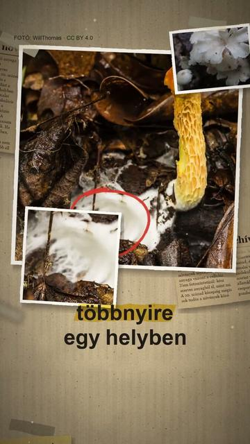

Megnézem a YouTube-onTényleg növény a gomba?
Röviden: A gomba nem növény, hanem külön ország: a gombák országa (Fungi). Sejtfala kitint és glükánt tartalmaz, akárcsak az ízeltlábúak páncélja; a növényeké viszont főleg cellulózból áll.
A gomba nem növény, hanem külön ország: a gombák országa (Fungi). Sejtfala kitint és glükánt tartalmaz, akárcsak az ízeltlábúak páncélja; a növényeké viszont főleg cellulózból áll. Nem képes fotoszintézisre: az állatokhoz hasonlóan kész szerves anyagból él, és a szénhidrátot is glikogénként raktározza (OpenStax Biology 2e). A 20. század közepéig mégis sok tudós a növények közé sorolta. A növényekhez hasonlóan többnyire egy helyben marad, és gyökérszerű gombafonalai vannak a talajban. A molekuláris vizsgálatok szerint a gombák az állatokkal egy közös nagy csoportba (Opisthokonta) tartoznak, a növények külön ágon fejlődtek (Baldauf és Palmer, PNAS, 1993; Shalchian-Tabrizi és mtsai, PLoS ONE, 2008).
Az összes rész forrásokkal: https://valoban.pages.dev/
Források
- OpenStax Biology 2e, 24.1 Characteristics of Fungi
- OpenStax Biology 2e, 4.3 Eukaryotic Cells
- Baldauf, Palmer: Animals and fungi are each other's closest relatives, PNAS (1993)
- Shalchian-Tabrizi és mtsai: Multigene Phylogeny of Choanozoa…, PLoS ONE (2008)
4 forrás · Hogyan ellenőrzünk?
Hibát találtál? Írd meg nekünk, megnézzük.
Képek és kreditek
• légyölő galóca (Tyndrum, Skócia, 2005) – Tim Bekaert, Public domain (https://creativecommons.org/publicdomain/mark/1.0/) https://commons.wikimedia.org/?curid=347674
• fejes saláta: növény – Jeffery Martin, CC0 (https://creativecommons.org/publicdomain/zero/1.0/) https://commons.wikimedia.org/?curid=61662738
• cincér: a rovarpáncélban is kitin van – Stanislav Stelmakhovich, CC0 (https://creativecommons.org/publicdomain/zero/1.0/) https://commons.wikimedia.org/?curid=182505478
• hagymahártya-sejtek mikroszkóp alatt: cellulóz sejtfal – loganrickert, CC BY 2.0 (https://creativecommons.org/licenses/by/2.0/) https://commons.wikimedia.org/?curid=146585229
• gombák korhadó fatörzsön (Pennsylvania, 2021) – Cbaile19, CC0 (https://creativecommons.org/publicdomain/zero/1.0/) https://commons.wikimedia.org/?curid=108799424
• Ernst Haeckel: Basimycetes, gombatábla (1904) – Ernst Haeckel, Public domain (https://creativecommons.org/publicdomain/mark/1.0/) https://commons.wikimedia.org/?curid=569702
• tinóru tövénél a fehér micélium (2026) – WillThomas, CC BY 4.0 (https://creativecommons.org/licenses/by/4.0/) https://commons.wikimedia.org/?curid=196557973
• gombát evő mókus (Rocky Mountain NP, 2014) – Andrew Russell, CC BY 2.0 (https://creativecommons.org/licenses/by/2.0/) https://commons.wikimedia.org/?curid=158814155
• az Opisthokonta törzsfája: állatok és gombák (PLoS Biology, 2024) – Liu, Steenwyk, Zhou és mtsai (PLoS Biol), CC BY 4.0 (https://creativecommons.org/licenses/by/4.0/) https://commons.wikimedia.org/?curid=155246454
• légyölő galóca az erdőben (2009) – Bernie, Public domain (https://creativecommons.org/publicdomain/mark/1.0/) https://commons.wikimedia.org/?curid=7894320
A képek módosítva: 9:16-ra kivágva, átméretezve, kameramozgással, ráégetett felirattal.